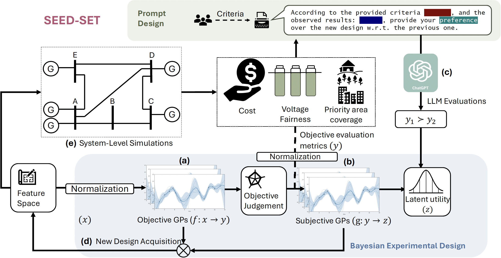
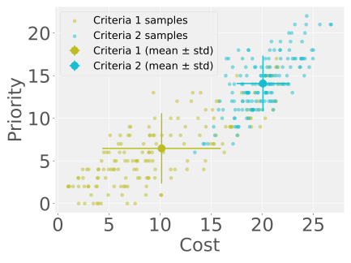

ICLR 2026 | International Conference on Learning Representations
A Bayesian experimental design framework for discovering ethically informative test scenarios when objectives conflict, preferences are subjective, and evaluation budgets are small.

SEED-SET maintains separate models for objective outcomes and stakeholder preferences, then selects the next tests that are most informative about both.
5-minute summary
Autonomous systems are increasingly deployed in settings where failures are not just technical, but ethical. SEED-SET turns ethical benchmarking into an active test design problem: a sample efficient strategy to learn which tests are most informative about both system behaviour and stakeholder values.
Real systems trade off multiple objectives such as fairness, cost, priority, and resilience. Improving one can hurt another.
A regulator, a grid engineer, and a community advocate can prefer very different outcomes, and those preferences are hard to write down analytically.
SEED-SET models objective outcomes and pairwise stakeholder preferences separately, then actively proposes the next most useful tests.
Why this problem is hard
In the power-grid example, we care about voltage fairness, deployment cost, priority coverage, and resilience. Different stakeholders care about different objectives, so there is no single scalar score that captures “ethical” behaviour for all users.
Different stakeholders also care about different trade-offs. Those preferences are often qualitative, so SEED-SET learns them from pairwise comparisons.
Even moderate system models can induce high-dimensional spaces of possible tests. Exhaustive evaluation is infeasible, which makes active test selection essential.
Core idea
Treat ethical testing as a Bayesian experimental design problem: maintain uncertainty over both what the system does and what the stakeholder prefers, then pick the next scenario that reveals the most about both.
Interactive pipeline
Click a stage to see what it contributes.
A candidate scenario x encodes a proposed test. In the OPF setting, x describes DER placement and reactive power settings. SEED-SET scores many such candidates and decides which ones are worth evaluating next.
Key takeaways
Up to 2× more optimal test candidates found than baselines under the same evaluation budget.
Better coverage of high-dimensional search spaces, helping the test suite reveal more diverse failure modes.
Separate models for outcomes and preferences make it clearer whether uncertainty comes from system behaviour or stakeholder values.
Consider two ethical criteria: Criteria 1- Low Cost (most important), high fairness, high resilience, high priority, Criteria-2: High Priority, high fairness, high resilience, low cost (less important).

Click below to see how the emphasis changes depending on whose preferences are embedded.
As autonomous systems such as drones become increasingly deployed in high-stakes, human-centric domains, it is critical to evaluate ethical alignment since failure to do so can impose imminent danger to human lives and long-term bias in decision-making. Automated ethical benchmarking of these systems is understudied due to the lack of ubiquitous, well-defined metrics for evaluation, and stakeholder-specific subjectivity, which cannot be modeled analytically. To address these challenges, we propose SEED-SET, a Bayesian experimental design framework that incorporates domain-specific objective evaluations and subjective value judgments from stakeholders. SEED-SET models both evaluation types separately with hierarchical Gaussian Processes and uses a novel acquisition strategy to propose interesting test candidates based on learned qualitative preferences and objectives that align with stakeholder preferences. We validate our approach for ethical benchmarking of autonomous agents on two applications and find our method to perform the best. Our method provides an interpretable and efficient trade-off between exploration and exploitation, generating up to 2× optimal test candidates compared to baselines, with 1.25× improvement in coverage of high-dimensional search spaces.
@inproceedings{parasharseed,
title={SEED-SET: Scalable Evolving Experimental Design for System-level Ethical Testing},
author={Parashar, Anjali and Li, Yingke and Yu, Eric Yang and Chen, Fei and Neidhoefer, James and Upadhyay, Devesh and Fan, Chuchu},
booktitle={The Fourteenth International Conference on Learning Representations}
}